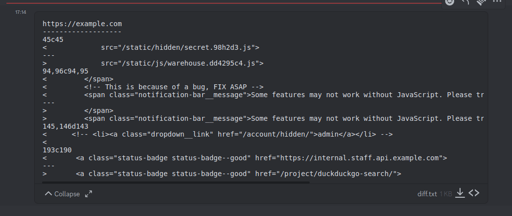

Im a big fan how github does its commit history, i've spent many hours scrolling through those christmas colored diffed lines of code looking for secrets. The only problem is that github is massive, and it is really hard to find those needles in the codestack so to say. Not to mention if the codebase is private, theres not much you can do.
The Idea
What if you could get a diff of any page of any website sent to your phone, kinda. The one thing you do always have access to is the client side code running on the application. There really shouldnt be any secrets running in client side code, but then again there shouldnt be any secrets in github repos either and we all know thats not always the case. Hmm Hmm solarwinds_github_password.
With some good recon you would be surprised with the interesting files you can find hosted on the web. There is the obvious ones that we can monitor such as JS files, wp-content or wp-json on wordpress sites, html for endpoints (api endpoints), etc. but in this case im most interested in json, txt, php files.
config.json
manifest.json
phpinfo.php
package.json
etc.
I often find the above mentioned files publicly exposed on websites. Ill come across pages like this and think sweet this will be easy, only to realize they are doing the right thing and not putting the API key in. Although it does makes me wonder if they have done the right thing every single time.
How cool would it be to get a notification of any changes made to this page, so if they ever accidentally leak the key it would be sent straight to your phone. Or something like this page here, this page is dynamically created, and it rotates through different clientIP addresses over time. These few lines of bash can send you a message with the IP address when it changes.
It can also be useful for monitoring js package versions if you have access to package.json or just for raw js files if you can be bothered parsing through the js. It can be handy for detecting new features added to an app and also finding new endpoints. Here is a made up example of the kinds of things you can find in js files.
I was able to do this by using Discord web hooks, and curl. The script uses curl for the requests, then hashes the new file and compares it with the old file and will send the diff as a message if there are changes. Just add your own discord web hook, and change the url and set it to a cron job, and you will have automated monitoring sent to your Discord.
Script
#!/bin/bash
URL="https://example.com/config.json"
NEW_FILE="new.example.config.json"
OLD_FILE="example.config.json"
DISCORD_WEBHOOK="https://discord.com/api/webhooks/123456789/
asfxxxxxxxxxxxxx8E-DxxxxxxxxxZ-IWxxxxxxxxxxxxxxxxxdiIzEyG"
if [ ! -e "$OLD_FILE" ]; then
curl $URL > $OLD_FILE
else
curl "$URL" > "$NEW_FILE"
x=$(sha256sum "$NEW_FILE" | awk "{print $1}")
y=$(sha256sum "$OLD_FILE" | awk "{print $1}")
if [ "$x" = "$y" ]; then
rm "$NEW_FILE"
else
echo "$URL" > diff.txt
echo "---------------------------" >> diff.txt
echo "" >> diff.txt
diff "$OLD_FILE" "$NEW_FILE" >> diff.txt
curl -X "POST" -F "file=@diff.txt" "$DISCORD_WEBHOOK"
fi
fi
Disclaimer
This tool is provided for educational, bug bounty, pen test, ie. ethical security research. The author does not condone, support, or encourage any illegal or malicious activities. The tool should only be used on systems and networks for which you have explicit permission to test. Any misuse or illegal activities conducted with this tool are the sole responsibility of the user. By using this tool, you agree to take full responsibility for your actions and to use it in compliance with applicable laws and regulations.